5 Query’s
- Waarvoor je query’s kunt gebruiken en welke soorten query’s er zijn.
- Het maken van een eenvoudige selectiequery met behulp van de wizard.
- Voorwaarden in een query.
- Groeperen en berekeningen in een query.
- Parameterquery, bijwerkquery, tabelmaakquery en kruistabelquery.
Het opvragen van informatie uit een database is de meest voorkomen actie van eindgebruikers. Om de gewenste informatie te leveren zijn query’s nodig. Eenvoudige query’s maakt de eindgebruiker vaak zelf, voor de wat complexere query’s is hulp van een professional meestal gewenst.
5.1 Over query’s maken
De meest bekende vorm van een query is de selectiequery, dat is een soort vraag aan de database naar een bepaald verzameling gegevens. Een query kan echter meer dan een lijst met records produceren. Zo kunnen er in een query functies voorkomen die berekeningen (som, gemiddelde, …) uitvoeren op de gegevens. En er zijn verschillende soorten query’s. De volgende types komen in deze cursus aan bod:
- Selectiequery
- Haalt gegevens uit een of meerdere tabellen en toont het resultaat in een gegevensbladweergave. Je kunt deze query ook gebruiken om records te groepen en berekeningen uit te voeren zoals som, gemiddelde, aantal, … Dit is de meest voorkomende soort query.
- Parameterquery
- Hierbij wordt eerst aan de gebruiker om een bepaalde waarde voor een of meerdere velden gevraagd. Daarna wordt het antwoord gebruikt om een selectiequerie uit te voeren. Een voorbeeld is een overzicht van orders vanaf een bepaalde datum.
- Bijwerkquery
- Hierbij is het mogelijk om via één actie een of meerdere wijzigingen in records aan te brengen die aan bepaalde voorwaarden voldoen. Een voorbeeld is een prijsverhoging van 10% voor een serie producten.
Voor het maken van een query is het nodig dat eerst de informatiebehoefte goed gespecificeerd wordt. Na de analyse van deze informatiebehoefte kan dan begonnen worden met het maken van de query.
5.2 Taak: Klanten en orders
INFORMATIEBEHOEFTE
Maak een gesorteerd overzicht van alle klanten met hun achternaam, voornaam en bijbehorende ordercodes.
ANALYSE
De achternaam en voornaam van de klant zitten in de tabel Klanten. De ordercodes van de klant zitten in de tabel Orders. Omdat dit een eenvoudige rechttoe rechtaan selectiequery is wordt gebruik gemaakt van de Wizard.
Open zonodig database snoep365.accdb.
Kies tab Maken > Wizard Query (groep Query’s). Het dialoogvenster Nieuwe Query verschijnt. Hierin kan de soort query gekozen worden.
Kies Wizard Selectiequery > OK. In het volgende scherm kun je de velden kiezen die je in de query wilt hebben.
Selecteer bij Tabellen/query’s via de keuzelijst Tabel: Klanten. De velden van de tabel Klanten worden getoond in het vak Beschikbare velden.
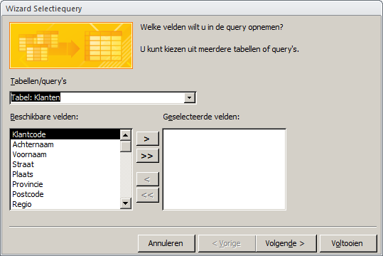
Figuur 5.1: Wizard Selectiequery met tabel Klanten.
Selecteer het veld Achternaam en klik op de knop []images/common/button-add-field.png). Het veld Achternaam wordt verplaatst naar de geselecteerde velden.
Voeg op dezelfde manier het veld Voornaam toe.
Selecteer Tabel: Orders in het vak [Tabellen/query’s]{.uicontrol. De velden van de tabel Orders worden getoond in het vak Beschikbare velden.
Voeg het veld Ordercode toe.
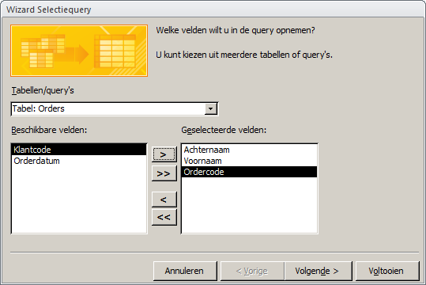
Figuur 5.2: Wizard selectiequery met geselecteerde velden.
Klik op Volgende. In het weergegeven scherm kun je aangeven of Details of Totalen getoond moeten worden.
Selecteer Details (alle velden van alle records weergeven) en klik op Volgende.
Geef de query als naam Klantnaam+Ordercodes, selecteer Het queryontwerp wijzigen en klik Voltooien. Het ontwerp van de query wordt weergegeven.
Klik in het vak Sorteervolgorde van de kolom Achternaam en kies Oplopend.
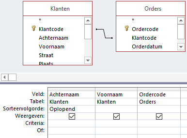
Figuur 5.3: Ontwerp query klanten en ordercodes.
- Schakel over naar de Gegevensbladweergave.
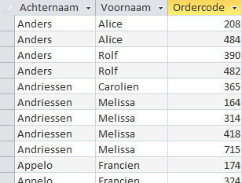
Figuur 5.4: Resultaat query klantnaam met ordercodes.
- Sluit de query en beantwoord de vraag om de wijzigingen op te slaan met Ja.
5.3 Criteria in query’s
In een query kunnen voorwaarden worden opgenomen zodat alleen records worden opgenomen die aan deze voorwaarden voldoen. In het queryraster is daarvoor de rij Criteria beschikbaar.
Een criterium lijkt op een formule en kan verwijzingen naar velden, operatoren en constante waarden (waarden die altijd hetzelfde zijn) bevatten. Zo’n formule wordt in Access ook wel een expressie genoemd. Wat in een criterium mag staan hangt af van het gegevenstype van het veld (tekst, numeriek, datum/tijd, ja/nee).
| Categorie | Operatoren |
|---|---|
| Rekenkundig |
+, -, *, /, \, ^, Mod
|
| Vergelijking |
=, >, >=, <, <=, <>
|
| Logisch |
And, Or, Not, Xor, Eqv
|
| Samenvoeging |
&, +
|
| Speciaal |
Is Null, Is Not Null, Like, Between, In
|
Je kunt hiermee eenvoudige criteria maken, maar ook zeer ingewikkelde.
Een speciale rol is er voor de Like operator. Deze vergelijkt een waarde met een bepaald patroon. Dat patroon kan de letterlijke tekenreeks zijn waarmee vergeleken moet worden, bijvoorbeeld Like “Noord”. Maar het patroon mag ook jokertekens (wildcards) bevatten, bijvoorbeeld Like "He*". Dit maakt het gebruik van de Like operator erg krachtig.
Datumwaarden moeten omringd worden met het symbool #. Enkele voorbeelden van criteria met datums: #5-12-2010#,>#1-9-2010#, >#1-9-2010# And <#15-9-2010#.
Jokertekens zijn tijdelijke aanduidingen voor andere tekens, die je gebruikt wanneer je niet het hele zoekpatroon kent maar slechts een deel daarvan. De drie meest gebruikte jokertekens zijn:
*: Voor een willekeurig aantal tekens. Voorbeelden:"A*","*dam"?: Voor één willekeurig teken. Voorbeeld:"b?k"#: Voor één willekeurig cijfer. Voorbeeld"1#5"
Zie verder Voorbeelden van querycriteria (artikel Microsoft)
5.4 Taak: Orders Utrechtse klanten
Aan een bestaande query worden handmatig velden en criteria toegevoegd waarna de query onder een andere naam wordt opgeslagen.
Om deze taak te kunnen uitvoeren is het noodzakelijk dat eerst 5.2 is uitgevoerd.
INFORMATIEBEHOEFTE
Maak een gesorteerd overzicht met achternaam, voornaam en ordercodes van alle klanten die in de provincie Utrecht wonen en waarvan de orderdatum in december 2009 lag.
ANALYSE
Alle gewenste informatie wordt al geleverd door de query die je gemaakt hebt in 5.2. Er zijn echter twee aanvullende voorwaarden (criteria):
- Het veld Provincie (in de tabel Klanten) moet de waarde UT hebben.
- Het veld Orderdatum (in de tabel Orders) moet een waarde hebben die kan lopen van 1-12-2009 t/m 31-12-2009.
Open zonodig database snoep365.accdb.
Open de query Klantnaam+Ordercodes in de Ontwerpweergave.
Figuur 5.5: Ontwerpweergave query Klantnaam+Ordercodes.
- Sleep het veld Provincie uit de tabel Klanten naar de kolom naast Ordercode). Sleep het veld Orderdatum uit de tabel Orders naar de volgende kolom.
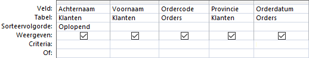
Figuur 5.6: Velden in het queryraster.
Typ onder Provincie in het vak Criteria in “UT”.
Typ onder Orderdatum in het vak Criteria in Like “*12-2009”.
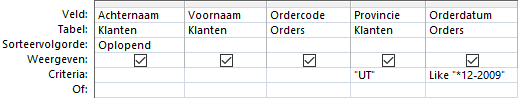
Figuur 5.7: Orderdatum met Like operator.
- Het sterretje
*heet een joker en betekent dat op deze plaatst willekeurige tekst mag staan. In dit geval heeft het daardoor de betekenis van “een willekeurige dag”. - Op computers waar een Amerikaanse datumweergave (maand-dag-jaar) is ingesteld moet deze eerst op de Nederlandse datumweergave (dag-maand-jaar) worden ingesteld.
Schakel naar de Gegevensbladweergave en controleer dat alle klanten uit de provincie Utrecht komen en dat alle orderdata in december 2009 liggen.
Schakel naar de Ontwerpweergave en deselecteer de selectievakjes Weergeven onder Provincie en Orderdatum.
Schakel naar de Gegevensbladweergave.
Sla de query onder een andere naam op via Bestand > Object opslaan als en geef in het dialoogvenster als naam op Utrecht en orderdatum dec 2009.
Klik op OK en sluit daarna de query.
5.5 Taak: Klanten met doos Kers
Een selectiequery met drie tabellen.
INFORMATIEBEHOEFTE
In de laatste maand van het kalenderjaar wordt geconstateerd dat de uiterste verkoopdatum van de dozen KERS in zicht is. De verkoopafdeling wil daarom een “direct mail” campagne organiseren naar de klanten die ooit een doos KERS gekocht hebben. Maak een overzicht van alle klanten met hun achternaam, voornaam en volledige adres die ooit minstens 1 doos KERS gekocht hebben.
ANALYSE
De benodigde klantgegevens (voornaam, achternaam, straat, postcode, plaats) staan in de tabel Klanten. De soort dozen die afgenomen zijn, zijn te vinden in het veld Dooscode in de tabel Orderdetails. Om een order aan een klant kunnen koppelen is ook nog de tabel Orders nodig. De tabel Orders vormt de verbindende schakel tussen de tabel Klanten en de tabel Orderdetails. Verder moet als criterium in de query gebruikt worden dat het veld Dooscode de waarde KERS heeft.
Bij het gebruik van de Wizard om de query te maken, kan volstaan worden met alleen de benodigde velden uit de tabellen Klanten en Orderdetails toe te voegen. De Wizard zorgt er dan voor dat automatisch de tabel Orders wordt toegevoegd omdat deze de verbinding vormt tussen de tabellen Klanten en Orderdetails. Bij het handmatig vanaf nul maken van de query moet je er zelf aan denken om de tabel Orders toe te voegen. Daarom wordt in deze taak de voorkeur gegeven aan het gebruik van de Wizard.
Dat er minimaal 1 doos is afgenomen hoeft niet als criterium te worden opgenomen omdat bij gekoppelde tabellen automatisch hieraan voldaan wordt.
Open zonodig database snoep365.accdb.
Kies tab Maken > Wizard Query (groep Query’s). Het dialoogvenster Nieuwe Query verschijnt. Hierin kan de soort query gekozen worden.
Selecteer Wizard Selectiequery en klik op OK. In het volgende scherm kun je de velden kiezen die je in de query wilt hebben.
Selecteer bij Tabellen/query’s via de keuzelijst Tabel: Klanten. De velden van de tabel Klanten worden getoond in het vak Beschikbare velden, zie figuur 5.1.
Voeg de volgende velden toe: Voornaam, Achternaam, Straat, Postcode, Plaats. Selecteer het veld en gebruik dan de knop []images/common/button-add-field.png).
Je kunt ook dubbelklikken op een veld om deze toe te voegen of weer te verwijderen.
Selecteer onder Tabellen/query’s Tabel: Orderdetails. De velden van de tabel Orderdetails worden getoond in het vak Beschikbare velden.
Voeg het veld Dooscode toe.
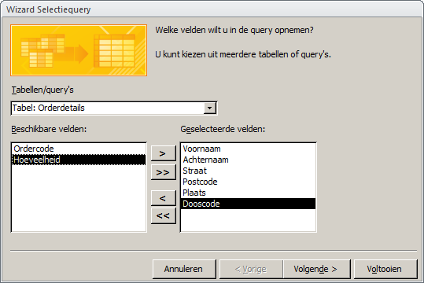
Figuur 5.8: Wizard selectiequery met toegevoegde velden.
Klik op [Volgende]{.uicontrol. Je kunt nu aangegeven of Details of Totalen getoond moeten worden.
Selecteer Details (alle velden van alle records weergeven) en klik op Volgende.
Geef de query als naam Klanten en Kers, selecteer Het queryontwerp wijzigen en klik op Voltooien. De query wordt opgeslagen en verschijnt daarna in de ontwerpweergave.
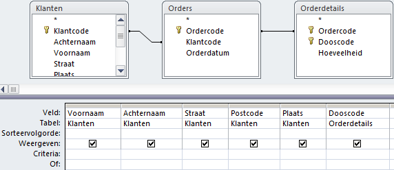
Figuur 5.9: Ontwerpweergave query Klanten en Kers.
- Typ KERS onder Dooscode in het vak Criteria en laat dit veld niet weergeven.
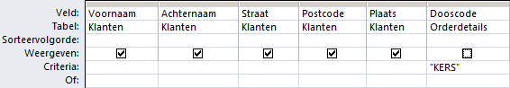
Figuur 5.10: Selectiecriterium in ontwerp query, criterium dooscode wordt kers.
Schakel naar de Gegevensbladweergave.
Sluit de query en beantwoord de vraag om de wijzigingen op te slaan met Ja.
5.6 Groeperen en Berekeningen
De eenvoudige selectiequery’s werken met individuele records. Wanneer je via een query bepaalde klanten uit de tabel Klanten selecteert dan zie je in het resultaat een record voor elke klant die hieraan voldoet. Je kunt echter records ook groeperen en dan berekeningen uitvoeren op de deelgroepen. Dat kun je vergelijken met het berekenen van totalen en subtotalen.
Wanneer een query in de ontwerpweergave staat dan zie je op het lint tab Ontwerp > Totalen (groep Weergeven/verbergen) het symbool
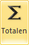
.Met deze knop kun je de rij Totaal in het queryraster zichtbaar en onzichtbaar maken. Access voegt een vak Totaal toe voor elk veld, net onder het vak Tabel.
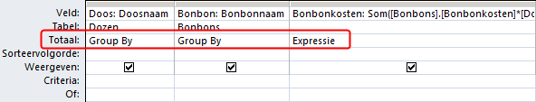
Figuur 5.11: Query ontwerp met de zichtbare rij totaal.
Voor elk toegevoegd veld is een keuzevak beschikbaar. De gemaakte keuze bepaalt of een veld gebruikt wordt voor een berekening of voor groeperen of voor filteren. De beschikbare mogelijkheden zijn in drie categorieën onder te brengen:
- Groeperen
- De keuze is dan:
Group By. Het veld wordt gebruikt voor het maken van kleinere groepen waarop de berekeningen worden uitgevoerd. Deze keuze is ook de standaardwaarde. - Filteren
- De keuze is dan:
Waar(Engels: Where). Het vakje voor Weergeven wordt ook automatisch gewist en dat moet zo blijven. In het vak Criteria kun je met een expressie aangeven waarop gefilterd moet worden. - Berekeningen
- Je kunt dan kiezen uit:
Som,Gem,Min,Max,Aantal,StDev,Var,Eerste,Laatste,Expressie. De gekozen berekening wordt dan voor het veld uitgevoerd.
| Keuze Totaal | Toelichting |
|---|---|
Group By |
Maakt subgroepen van records gebaseerd op de waarden in dit veld. |
Som |
Telt de waarden in dit veld op. |
Gem |
Berekent het gemiddelde van de waarden in dit veld. |
Min |
Bepaalt de kleinste waarde in dit veld. |
Max |
Bepaalt de grootste waarde in dit veld. |
Aantal |
Telt het aantal records. |
StDev |
Berekent de standaarddeviatie van de waarden in dit veld. |
Var |
Berekent de variantie van de waarden in dit veld. |
Eerste |
Bepaalt de eerste waarde in dit veld. |
Laatste |
Bepaalt de laatste waarde in dit veld. |
Expressie |
Berekent een expressie voor de waarden in dit veld. |
Waar |
Voor het filteren op waarden in dit veld. |
Berekend veld
Een berekend veld haalt waarden uit een of meerdere velden en voert er een berekening mee uit om nieuwe informatie te produceren. Je kunt eenvoudige berekeningen uitvoeren zoals optellen en vermenigvuldigen, maar ook de ingebouwde functies van Access gebruiken zoals Som en Gem. Je kunt alleen velden gebruiken die aan de query zijn toegevoegd. Ga als volgt te werk om een berekend veld te maken.
- Klik in de rij Veld van een lege kolom.
- Typ een naam voor berekening (het resultaat) in gevolgd door een dubbele punt (
:). - Typ de expressie voor de berekening in.
Je kunt veldnamen in de expressie opnemen. Veldnamen moeten tussen blokhaken staan:
[veldnaam]. Wanneer een veldnaam geen spaties bevat dan zet Access deze blokhaken wanneer je de naam ingetypt hebt. Zitten er wel spaties in de naam dan zul je zelf deze blokhaken moeten intypen.Wanneer je een van de berekeningsopties voor het samenvatten gebruikt is het ook aan te bevelen om een nieuwe naam voor de veldnaam in te typen, anders genereert Access een naam voor het resultaat in de gegevensweergave. Deze nieuwe naam moet ook eindigen met een dubbele punt.
Hierna volgen een paar voorbeelden. Bestudeer ze goed. Maak ze na en experimenteer er mee.
Gemiddelde bonbonkosten per chocoladetype
In dit voorbeeld wordt het veld Chocoladetype gebruikt om te groeperen en het veld Bonbonkosten voor de berekening van de gemiddelde bonbonkosten. Het resultaat bestaat uit een record per chocoladetype met daarin de gemiddelde prijs.
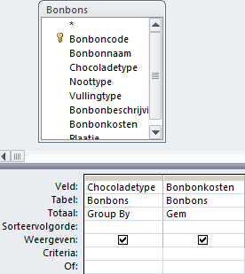
Figuur 5.12: Ontwerp query gemiddelde bonbonkosten per chocoladetype.
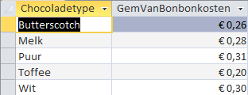
Figuur 5.13: Resultaat query gemiddelde bonbonkosten per chocoladetype.
Omdat voor de kolom met de gemiddelde kosten geen nieuwe naam is opgegeven, genereert Access een naam hiervoor: GemVanBonbonkosten.
Doosprijs statistieken
In dit voorbeeld wordt het veld Doosprijs 4 keer gebruikt met verschillende berekeningen. Het resultaat van de query is één record met daarin de 4 uitkomsten van de berekeningen.
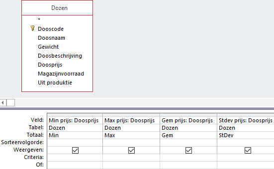
Figuur 5.14: Ontwerp query doosprijs statistieken.
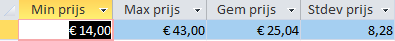
Figuur 5.15: Resultaat query doosprijs statistieken.
Gemiddelde doosprijs voor dozen van meer dan 200 gram
In dit voorbeeld wordt het veld Doosprijs gebruikt om het gemiddelde te berekenen. Het veld Gewicht wordt gebruikt om te filteren op dozen van meer dan 200 gram.
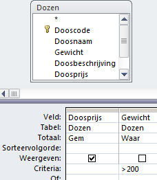
Figuur 5.16: Ontwerp query gemiddelde doosprijs dozen zwaarder dan 200 gram.
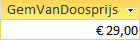
Figuur 5.17: Resultaat query gemiddelde doosprijs dozen zwaarder dan 200 gram.
5.7 Taak: Aantal klanten per provincie
Oefening van een selectiequery met groeperen en berekening met de functie Aantal.
INFORMATIEBEHOEFTE
Maak een overzicht van het aantal klanten per provincie.
ANALYSE
Alle benodigde gegevens staan in de tabel Klanten. Uiteraard is het veld Provincie nodig. Een klant wordt uniek geïdentificeerd door de Klantcode, zodat het aantal klantcodes per provincie geteld moet worden. Hiervoor moet er gegroepeerd worden per Provincie.
Open zonodig database snoep365.accdb.
Kies tab Maken > Queryontwerp (groep Query’s). Access maakt een nieuw leeg queryvenster en toont het dialoogvenster Tabel weergeven.
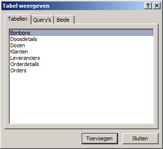
Figuur 5.18: Dialoogvenster Tabel weergeven.
Selecteer de tabel Klanten en klik op Toevoegen en daarna op Sluiten. De tabel Klanten is nu aan het queryvenster toegevoegd.
Voeg achtereenvolgens de velden Provincie en Klantcode aan het queryraster toe door dubbel te klikken op het veld.
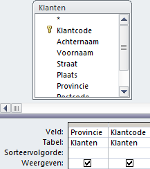
Figuur 5.19: Ontwerp query klanten per provincie
- Klik op tab Ontwerp > knop Totalen (groep Weergeven/verbergen). Er wordt een rij Totaal aan het queryraster toegevoegd:
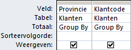
Figuur 5.20: Totaalrij aan ontwerp query toegevoegd.
- Klik in het vak onder de kolom Klantcode in de rij Totaal. Er verschijnt dan een keuzepijl. Selecteer hiermee
Aantal.
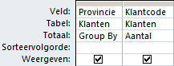
Figuur 5.21: Groepering met aantal.
- Schakel over naar de Gegevensbladweergave.
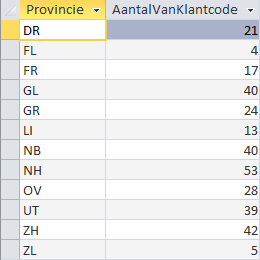
Figuur 5.22: Resultaat query aantal klanten per provincie.
Sluit de query en beantwoord de vraag of de wijzigingen bewaard moeten worden met Ja. Het venster Opslaan als verschijnt zodat de naam van de query kan worden opgegeven.
Typ als naam in Aantal klanten per provincie en klik op OK.
5.8 Taak: Kolomtitel wijzigen
Om deze taak uit te kunnen voeren is het noodzakelijk dat eerst 5.7 is uitgevoerd.
Standaard gebruikt Access de veldnamen als kolomkop in de gegevensbladweergave. En voor samenvattings gegevens wordt een titel gegenereerd. Het is aan te bevelen om duidelijker namen te gebruiken.
Open zonodig database snoep365.accdb.
Open de query Aantal klanten per provincie in de Ontwerpweergave.
Plaats de cursor in het vak met de veldnaam Klantcode voor het begin van de naam, dus voor de
Ken typ in Aantal klanten:.
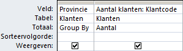
Figuur 5.23: Ontwerp gewijzigde kolomtitel.
- Schakel over naar de Gegevensbladweergave.
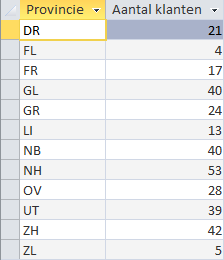
Figuur 5.24: Resultaat gewijzigde kolomtitel.
- Sluit de query en beantwoord de vraag om de wijzigingen op te slaan met Ja.
5.9 Taak: Berekend veld
INFORMATIEBEHOEFTE
Maak een gesorteerd overzicht van alle orderregels met daarop per order: ordercode, dooscode, aantal dozen, doosprijs en het regelbedrag.
ANALYSE
Voor elke order kun je de ordercode, dooscode en het aantal dozen vinden in de tabel Orderdetails. De doosprijs zit in de tabel Dozen. Je hebt dus de tabellen Orderdetails en Dozen nodig. Het bedrag van de orderregel zit in geen enkele tabel omdat dit bedrag uit de andere gegevens berekend kan worden: Orderregelbedrag = Hoeveelheid * Doosprijs.
Open zonodig database snoep365.accdb.
Kies tab Maken > Queryontwerp (groep Query’s). Access maakt een nieuw leeg queryvenster en toont het dialoogvenster Tabel weergeven (zie eventueel figuur 5.18).
Voeg achtereenvolgens de tabellen Orderdetails en Dozen toe en klik daarna op Sluiten. De tabellenOrderdetails en Dozen zijn nu aan het queryvenster toegevoegd.
Voeg achtereenvolgens de velden Ordercode, Dooscode, Hoeveelheid (uit tabel Orderdetails) en Doosprijs (uit tabel Dozen) aan het queryraster toe door dubbel te klikken op het veld.
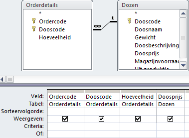
Figuur 5.25: Ontwerp met tabellen en velden.
- Zet de sorteervolgorde bij Ordercode en Dooscode op Oplopend. Klik in rij veld van de eerste lege kolom en typ in Regelbedrag: Hoeveelheid*Doosprijs. Access zet blokhaken om de veldnamen.
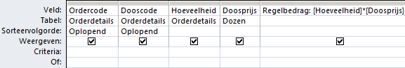
Figuur 5.26: Ontwerp uitgebreid met berekend veld.
- Schakel naar de Gegevensbladweergave. De bedragen moeten nog in een financiële getalnotatie worden opgemaakt.
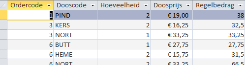
Figuur 5.27: Resultaat query zonder financiële opmaak van de bedragen.
- Schakel over naar de Ontwerpweergave.
Alle objecten in Access hebben eigenschappen. Deze eigenschappen bepalen onder andere het uiterlijk van het object. De instellingen van de eigenschappen en het wijzigen ervan gaat via het Eigenschappenvenster. Het in- en uitschakelen van de zichtbaarheid van het eigenschappenvenster gaat via tab Ontwerp > Eigenschappenvenster (groep Weergeven/verbergen). Nog sneller is het gebruik van de sneltoets F4.
Om geldbedragen van een valutasymbool te voorzien moet de eigenschap Notatie van het veld Regelbedrag gewijzigd worden.
- Zorg dat het Eigenschappenvenster zichtbaar is. Klik ergens in het veld Regelbedrag.
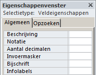
Figuur 5.28: Eigenschappenvenster van het veld Regelbedrag.
Klik in het vak Notatie en kies dan met de keuzelijst voor
Euro.Schakel over naar de Gegevensbladweergave.
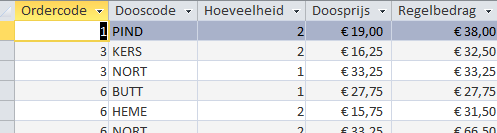
Figuur 5.29: Resultaat query met financiële opmaak van de bedragen.
Sluit de query en beantwoord de vraag of de wijzigingen bewaard moeten worden met Ja. Het venster Opslaan als verschijnt zodat de naam van de query kan worden opgegeven.
Typ als naam in Orderregelbedrag en klik op OK.
5.10 Taak: Eerste order per klant
INFORMATIEBEHOEFTE
Maak een overzicht van de eerste order per klant. Geef per klant de klantcode, de naam en de datum waarop deze klant de eerste order heeft geplaatst.
ANALYSE
De benodigde gegevens staan in de tabellen Klanten en Orders. Er moet dus een query gemaakt te worden die de klantgegevens en de orderdata toont. Het vinden van de eerste order kan gerealiseerd worden door in de Totalen rij de “Group By” te vervangen door “Min”.
Open zonodig database snoep365.accdb.
Kies tab Maken > Queryontwerp (groep Query’s). Access maakt een nieuw leeg queryvenster en toont het dialoogvenster Tabel weergeven (zie evnetueel figuur 5.18).
Voeg achtereenvolgens de tabellen Klanten en Orders toe en klik daarna op Sluiten. De tabellen zijn nu aan het queryvenster toegevoegd.
Voeg achtereenvolgens de velden Klantcode, Achternaam en Voornaam (uit Klanten) en Orderdatum (uit Orders) aan het queryraster toe door dubbel te klikken op de velden.
Klik op tab Ontwerp > knop Totalen (groep Weergeven/verbergen).
Wijzig de kolomtitel voor Orderdatum door aan het begin van de veldnaam in te typen Eerste orderdatum:.
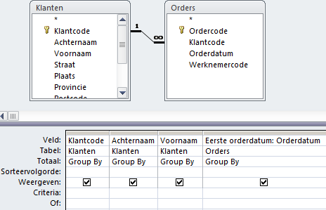
Figuur 5.30: Tabellen en velden voor query Eerste order per klant.
Klik in de kolom Orderdatum in het vak Totaal, klik dan op de keuzepijl die verschijnt en selecteer
Min.Zet de sorteervolgorde bij Achternaam en Voornaam op Oplopend.
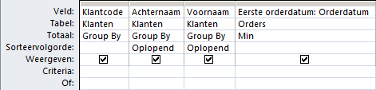
Figuur 5.31: Ontwerp query eerste order per klant.
- Schakel naar de Gegevensbladweergave.
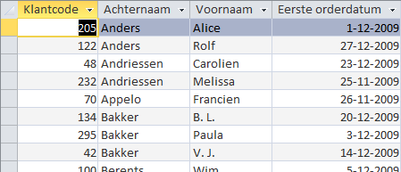
Figuur 5.32: Resultaat query eerste order per klant.
Sluit de query en beantwoord de vraag of de wijzigingen bewaard moeten worden met Ja. Het venster Opslaan als verschijnt zodat de naam van de query kan worden opgegeven.
Typ als naam in Datum eerste order per klant en klik op OK.
5.11 Taak: Parameterquery
Een parameterquery is een query die tijdens de uitvoering een dialoogvenster toont waarin aan de gebruiker om aanvullende informatie wordt gevraagd, zoals criteria voor het ophalen van records of een waarde die je wilt invoegen in een veld. Je kunt de query zo ontwerpen dat er meerdere gegevens worden gevraagd, bijvoorbeeld een begin- en een einddatum. Vervolgens kunnen alle records worden opgehaald die tussen deze twee datums vallen.
Parameterquery’s zijn ook gemakkelijk als basis voor formulieren en rapporten. Op basis van een parameterquery kun je bijvoorbeeld een maandelijks inkomstenrapport maken. Bij het afdrukken van het rapport wordt via een dialoogvenster gevraagd voor welke maand je het rapport wilt afdrukken. Je geeft de maand op en vervolgens wordt het juiste rapport afgedrukt.
INFORMATIEBEHOEFTE
In het bedrijf Snoopy krijgt men regelmatig vragen van klanten over een bepaalde order via de telefoon. Je wilt dan snel een antwoord kunnen geven op zo’n vraag. Het doel is nu om de gegevens van een bepaalde order snel op het scherm te krijgen. Via een parameterquery die tijdens de uitvoering naar het ordernummer vraagt, is dat mogelijk.
ANALYSE
De benodigde gegevens over een bepaalde order staan in de tabellen Orders en Orderdetails. Vragen naar de ordercode kan geregeld worden via een criterium.
Open zonodig database snoep365.accdb.
Kies tab Maken > Queryontwerp (groep Query’s). Access maakt een nieuw leeg queryvenster en toont het dialoogvenster Tabel weergeven (zie eventueel figuur 5.18).
Voeg de tabellen Orders en Orderdetails toe en klik daarna op Sluiten. De tabellen zijn nu aan het queryvenster toegevoegd.
Voeg achtereenvolgens de velden Ordercode, Klantcode, Orderdatum (uit Orders), Dooscode en Hoeveelheid (uit Orderdetails) aan het queryraster toe door dubbel te klikken op de velden.
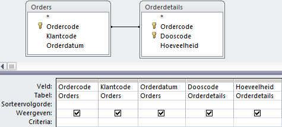
Figuur 5.33: Tabellen en velden voor de query.
- Klik in de kolom Ordercode in het vak Criteria en typ in [Voer ordercode in].
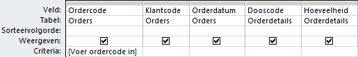
Figuur 5.34: Tabellen en velden voor de query.
Schakel naar de Gegevensbladweergave. Het dialoogvenster Parameterwaarde opgeven verschijnt.
Voer een waarde in, bijvoorbeeld 30 en klik op OK.
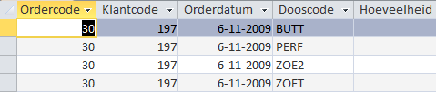
Figuur 5.35: Resultaat van de query.
Sluit de query en beantwoord de vraag of de wijzigingen bewaard moeten worden met Ja. Het venster Opslaan als verschijnt zodat de naam van de query kan worden opgegeven.
Typ als naam in Informatie bepaalde order en klik op OK.
5.12 Actiequery’s
De meeste query’s zijn selectiequery’s, die gebruikt worden om gegevens te verzamelen en te tonen, maar deze gegevens niet veranderen. Maar Access heeft ook een andere categorie query’s waarmee je gegevens kunt wijzigen of bijwerken en records kunt toevoegen. Deze categorie staat bekend als actiequery’s. Het grote voordeel van een actiequery is dat je hiermee een grote hoeveelheid records kunt wijzigen zonder dat je programmeerkennis nodig hebt. De manier waarop je deze query’s maakt en de wijze van werken is nagenoeg steeds hetzelfde: eerst maak je een selectiequery en daarna wijzig je het type van de query.
Access kent vier soorten actiequery’s:
- Tabelmaak
- Selecteert een of meer records en maakt dan een nieuwe tabel hiervoor aan. Deze nieuwe tabel kan in de geopende database geplaatst worden, maar ook in een andere database. Je kunt een tabelmaakquery bijvoorbeeld gebruiken om verouderde gegevens naar een archief database te kopiëren.
- Toevoeg
- Selecteert een of meerdere records en voegt deze aan een andere tabel toe. Wanneer je bijvoorbeeld dat je nieuwe klanten hebt verworven waarvan de gegevens in een afzonderlijke tabel staan, dan kun je een toevoegquery gebruiken om de records naar de bestaande tabel klanten te verplaatsen.
- Verwijder
- Verwijdert een of meerdere records die aan een filter met voorwaarden voldoen. Je kunt bijvoorbeeld met een verwijderquery producten verwijderen die niet meer worden aangeboden.
- Bijwerk
- Verandert waarden in een of meerdere records. De bestaande waarden worden dan vervangen door nieuwe waarden, een soort zoek en vervang actie. De veranderingen kunnen niet teruggedraaid worden en daarom is het aan te bevelen om altijd eerst een backup of kopie van de database of van de tabel te maken voordat een toevoeqquery uitgevoerd wordt.
Omdat actiequery’s gegevens in de database veranderen kunnen deze query’s een beveiligingsrisico vormen. Om een beveiliging hiertegen te bieden worden in Access en het Vertrouwenscentrum een aantal controles uitgevoerd. Het vertrouwenscentrum kan inhoud uitschakelen. Bij het openen van een dergelijke database geeft Access de berichtenbalk met een beveiligingswaarschuwing weer.

Figuur 5.36: Berichtenbalk met beveiligingswaarschuwing.
Wanneer je de uitgeschakelde inhoud wilt inschakelen, klik dan op Inhoud inschakelen > Opties en kies de gewenste optie in het dialoogvenster dat verschijnt. Access schakelt uitgeschakelde inhoud in en de database wordt opnieuw geopend met volledige functionaliteit.
Verder is het raadzaam om altijd eerst een backup te maken van de tabellen die gewijzigd worden. Dat gaat het gemakkelijkste met kopieren en plakken.
Kopie tabel maken
- Geef in het navigatievenster een rechter muisklik op de naam van de tabel en kies uit het snelmenu voor [Kopiëren]{.uicontrol.
- Geef opnieuw een rechter muisklik en kies nu voor Plakken en geef de nieuwe tabel een verschillende naam.
Om een tabel weer te herstellen na een wijziging ga je als volgt te werk:
- Geef in het navigatievenster een rechter muisklik op de naam van de gewijzigde tabel en kies uit het snelmenu voor Knippen.
- Geef een rechter muisklik op de naam van de kopietabel en kies nu voor Naam wijzigen en geef de tabel de oorspronkelijke naam.
5.13 Taak: Bijwerkquery
Een voorbeeld van een eenvoudige bijwerkquery waarmee in alle records van een tabel die aan een bepaalde voorwaarde voldoen de waarde van een veld gewijzigd wordt.
INFORMATIEBEHOEFTE
De bonbonkosten van alle bonbons met het witte chocoladetype moeten met 10% verhoogd worden.
ANALYSE
Alle benodigde gegevens staan in de tabel Bonbons. Hiervan hebben we de velden Chocoladetype en Bonbonkosten nodig. Selecteren op chocoladetype wit kan door een criterium toe te voegen. De bonbonkosten met 10% verhogen kan door de bestaande waarde te vermenigvuldigen met 1,1.
Open zonodig database snoep365.accdb.
Kies tab Maken > Queryontwerp (groep Query’s). Access maakt een nieuw leeg queryvenster en toont het dialoogvenster Tabel weergeven (zie eventueel figuur 5.18).
Voeg de tabel Bonbons toe en klik daarna op Sluiten. De tabel is aan het queryvenster toegevoegd.
Voeg achtereenvolgens de velden Chocoladetype en Bonbonkosten aan het queryraster toe door dubbel te klikken op de velden.
Wijzig het type query via tab Ontwerp > Bijwerken (groep Querytype). De rijen Sorteervolgorde en Weergeven verdwijnen en er komt een nieuwe rij Wijzigen.
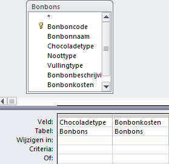
Figuur 5.37: Tabellen en velden voor de bijwerkquery.
Klik in de kolom Chocoladetype in het vak Criteria en typ in Wit.
Klik in de kolom Bonbonkosten in het vak Wijzigen in en typ in [Bonbonkosten]*1,1.
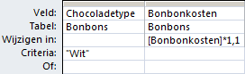
Figuur 5.38: Ontwerp bijwerkquery.
Wanneer de waarde uit een veld gebruikt moet worden, dan moet de veldnaam tussen blokhaken [ ... ] gezet worden.
Sla de query op via de knop Opslaan []images/common/button-save.png) op de werkbalk Snelle toegang linksboven en geef de query de naam Verhogen kosten witte bonbons met 10%.
Klik op
 tab Ontwerp > Uitvoeren (groep Resultaten). Er verschijnt nu een dialoogvenster waarin om een bevestiging gevraagd wordt om records bij te werken.
tab Ontwerp > Uitvoeren (groep Resultaten). Er verschijnt nu een dialoogvenster waarin om een bevestiging gevraagd wordt om records bij te werken.Klik op Ja.
Sluit de query.
5.14 Taak: Tabelmaakquery
INFORMATIEBEHOEFTE
De afdeling marketing wil alle klanten uit Friesland een speciaal aanbod doen. Ze hebben daarvoor een Access tabel nodig met daarin de klantgegevens van alleen de klanten uit de provincie Friesland.
ANALYSE
Alle benodigde gegevens staan in de tabel Klanten. Het selecteren op Friesland kan via een criterium in de query. Allereerst moet deze selectiequery gemaakt worden. Daarna kan de selectiequery omgezet worden in een tabelmaakquery.
Selectiequery maken
Open zonodig database snoep365.accdb.
Kies tab Maken > Queryontwerp (groep Query’s). Access maakt een nieuw leeg queryvenster en toont het dialoogvenster Tabel weergeven (zie eventueel figuur 5.18).
Voeg de tabel Klanten toe en klik daarna op Sluiten. De tabel is nu aan het queryvenster toegevoegd.
Voeg alle velden toe door een dubbelklik op het sterretje (
*) en voeg daarna nog een keer afzonderlijk het veld Provincie toe.Voer als criterium “FR” in onder het veld Provincie. Laat verder dit veld Provincie niet weergeven, omdat deze immers al wordt weergegeven via de tabel Klanten.
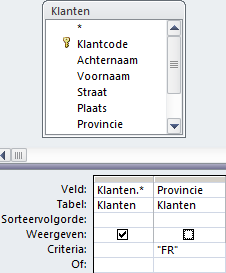
Figuur 5.39: Ontwerp tabelmaakquery.
Controleer de uitvoer van de query via de Gegevensbladweergave.
Bewaar de query onder de naam Klanten Friesland.
Selectiequery omzetten naar Tabelmaakquery
Open de query Klanten Friesland in de Ontwerpweergave.
Klik op Ontwerp > Tabel maken (groep Querytype). Het dialoogvenster Tabel maken wordt geopend.
Geef de nieuwe tabel als naam Friese klanten en geef aan dat deze in de huidige database geplaatst moet worden..
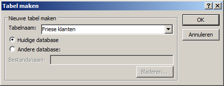
Figuur 5.40: Naam specificeren van de nieuwe tabel en de database waarin deze terecht moet komen.
Klik op OK.
- Klik op
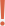
(Uitvoeren). Er verschijnt een waarschuwingsscherm met de vraag of de nieuwe tabel gemaakt moet worden. Klik op Ja. De nieuwe tabel wordt gemaakt.
Sluit de query. Er verschijnt een dialoogvenster met de vraag of de wijzigingen in het ontwerp moeten worden opgeslagen.
Klik op Ja.
wijzigingen bestaan er uit dat het type query van een selectiequery in een tabelmaakquery veranderd is. Dit is ook te zien in het navigatievenster onder Query’s.
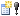
voor de querynaam geeft aan dat het hier om een actiequery gaat.5.15 Taak: Kruistabelquery
Een kruistabelquery berekent de som, gemiddelde of een andere samenvattingswaarde en groepeert de resultaten in rijen en kolommen. Een kruistabel is vergelijkbaar met een draaitabelrapport in Excel. Een kruistabelquery is vaak eenvoudiger leesbaar dan een gewone selectiequery met dezelfde gegevens. Door de horizontale en verticale groepering is het overzicht compacter.
Wanneer je een kruistabelquery maakt, moet je opgeven welke velden de rijkoppen bevatten, welk veld de kolomkoppen bevat en welk veld de waarden bevat die moeten worden samengevat. Voor de rijkoppen kun je meerdere velden gebruiken (maximaal 3), maar voor de kolomkoppen en de samen te vatten gegevens kun je maar één veld gebruiken. Verder kun je ook expressies gebruiken voor de rijkoppen, kolomkoppen en samen te vatten gegevens.
De gemakkelijkste en snelste manier om een kruistabelquery te maken is met behulp van de Wizard Kruistabelquery. Voor complexere query’s kun je vaak wel met deze Wizard beginnen, maar moet je daarna voor het fijnere werk overstappen naar de ontwerpweergave.
INFORMATIEBEHOEFTE
Bepaal het aantal klanten per provincie en per regio en toon het resultaat in een kruistabel.
ANALYSE
Alle benodigde gegevens staan in de tabel Klanten.
Open zonodig database snoep365.accdb.
Kies tab Maken > Wizard Query (groep Query’s) > Wizard Kruistabelquery > OK. In het scherm dat getoond wordt kun je de tabel of query selecteren welke de velden voor de kruistabel bevat.
Selecteer de tabel Klanten en klik op Volgende. Nu kun je de velden kiezen die de waarden voor de rijkoppen bevatten.
Voeg Provincie toe.
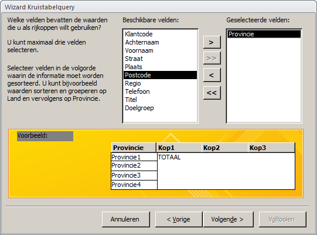
Figuur 5.41: Selectie velden voor rijkoppen
Klik op Volgende. Nu moet je het veld opgeven dat de waarden voor de kolomkoppen bevat.
Selecteer veld Regio.
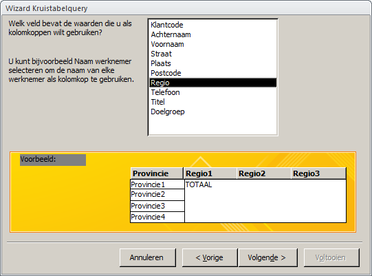
Figuur 5.42: Selectie veld voor kolomkop.
Klik op Volgende. Nu kun je het veld kiezen dat de waarden voor de samen te vatten gegevens bevat alsmede de functie voor het samenvatten.
Selecteer veld Klantcode en functie
Aantal. Deselecteer tevens de optie om een totaal te berekenen voor elke rij.
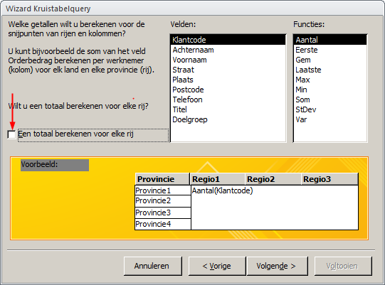
Figuur 5.43: Selectie veld en functie voor samenvatting.
Klik op Volgende.
Noem de query Aantal klanten per provincie per regio. Selecteer Bekijk de query en klik op Voltooien.
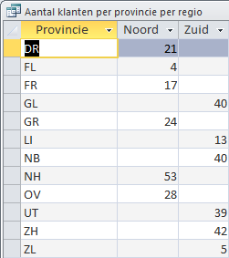
Figuur 5.44: Resultaat kruistabel.
5.16 Opgaven
quer001 - Klanten uit Friesland en Groningen
Maak een query om de klanten uit de provincies Friesland en Groningen te selecteren. Toon de velden Achternaam, Voornaam en Plaats. Sla de query op onder de naam quer001.
Het veld Provincie mag hier twee waarden hebben FR of GR. Dat kun je voor elkaar krijgen door in de regel voor Criteria de ene waarde te vermelden en bij de regel met Of de andere waarde.
Een andere mogelijkheid is het gebruik van een expressie met de Of operator als criterium.
Resultaat query: 40 klanten
quer002 - Direct mail campagne doos MARS
Stel het is eind december 2010. De houdbaarheidsdatum van de doos MARS komt in zicht en er is nog veel in voorraad. Daarom wil je een direct mail campagne gaan uitvoeren naar de klanten die in de periode augustus t/m november 2010 minimaal 1 doos MARS hebben besteld. Toon de naam en het adres van deze klanten. Sla de query op onder de naam quer002.
Resultaat query: 4 klanten
quer003 - Bonbondozen met lage prijs
Toon de Bonbondozen waarvan de prijs hoogstens € 17,50 bedraagt. Toon van de dozen de dooscode, de doosnaam en de prijs. Sla de query op onder de naam quer003.
Resultaat query: 4 dozen
quer004 - Bonbons melk en puur met lage kosten
Geef een overzicht van de bonbons met een chocoladetype melk of puur waarvan de prijs hoogstens 30 cent is. Sla de query op onder de naam quer004.
Resultaat query: 18 bonbons
quer005 - Klanten uit Enschede, Hengelo of Almelo
Geef een overzicht van de klanten (naam en adres) die in Enschede, Hengelo of Almelo wonen. Sla de query op onder de naam quer005.
Resultaat query: 12 klanten
quer006 - Klanten uit Amsterdam met postcode 20
Geef een overzicht van de klanten uit Amsterdam (naam en adres) waarvan de postcode met 20 begint. Sla de query op onder naam quer006.
Resultaat query: 3 klanten
quer007 - Bonbons zonder vulling
Geef een overzicht van alle bonbons zonder vulling. Sla de query op onder de naam quer007.
Zoek eerst uit welke waarde het veld Vullingtype heeft als een bonbon geen vulling heeft.
Resultaat query: 12 bonbons
quer008 - Klanten niet uit Amsterdam
Geef een overzicht van alle klanten die niet in Amsterdam wonen. Sla de query op onder de naam quer008.
Zoek eerst uit welke expressie je in een criterium moet gebruiken voor “niet gelijk aan”.
Resultaat query: 293 klanten
quer009 - Aantal bonbons per doos
Maak een query van de doosnamen en het aantal bonbons per doos. De kolom met aantal moet een passende naam hebben. De lijst moet oplopend gesorteerd zijn op doosnaam. Sla de query op onder de naam quer009.
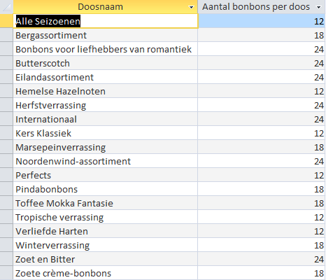
quer010 - Aantal bonbonsoorten per doos
Maak een query van de doosnamen en het aantal bonbonsoorten per doos. De kolom met aantal moet een passende naam hebben. De lijst moet oplopend gesorteerd zijn op doosnaam. Sla de query op onder de naam quer010.
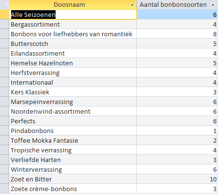
quer011 - Aantal orders per regio
Geef een overzicht van het aantal orders per regio. De kolom met aantal moet een passende naam hebben. Sla de query op onder de naam quer011.
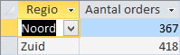
quer012 - Totale omzet per klant
Geef een overzicht van het totale omzet per klant. Toon hierbij de klantcode, klantnaam en het omzettotaal. De kolom met omzet moet een passende naam en opmaak hebben.Sorteer daarbij zodanig dat de klanten met de grootste omzet bovenaan komen te staan. Sla de query op onder de naam quer012.
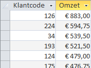
quer013 - Klanten die order geplaatst hebben
Geef een overzicht van de klanten (klantcode en klantnaam) die ooit iets gekocht hebben. Sla de query op onder de naam quer013.
Resultaat query: 264 klanten
quer014 - Klanten waarvan achternaam Jansen of Janssen is uit regio Noord
Geef een overzicht van de klanten waarvan de achternaam Jansen of Janssen en die in de regio Noord wonen. Sla de query op onder de naam quer014.
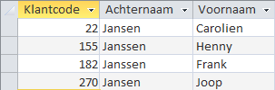
quer015 - Bonbons met vulling en zonder noot
Maak een overzicht van de bonbons die wel een vulling maar geen noot bevatten. Sla de query op onder naam quer015.
Resultaat query: 22 bonbons
quer016 - Dozen zwaarder dan 150 gram met prijs van hoogstens 35 euro
Maak een overzicht van de dozen die zwaarder zijn dan 150 gram en maximaal € 35,- kosten. Alleen de dooscode, doosnaam en prijs hoeven getoond te worden. Sorteer de dozen oplopend op prijs. Sla de query op onder de naam quer016.
quer017 - Dozen met prijs tussen 17 en 25 en voorraad van minstens 400
Maak een overzicht van de voorraad van de dozen met een prijs tussen € 17,- en € 25,- en waarvan er minstens 400 in voorraad zijn. Toon de doosnaam, de dooscode, de prijs en de voorraad. Sla de query op onder de naam quer017.
quer018 - Totale omzet per provincie
Geef een overzicht van de totale omzet per provincie. De kolom met aantal moet een passende naam en opmaak hebben. Sorteer aflopend op omzet. Sla de query op onder de naam quer018.
quer019 - Klanten die week voor de kerst besteld hebben
Geef een overzicht van de klanten die de laatste week voor kerst 2010 (20-12-2010 t/m 24-12 2010) dozen bonbons hebben besteld. Toon de klantcode, de klantnaam en het klantadres. Elke klant mag maar 1 keer in het overzicht voorkomen. Sla de query op onder de naam quer019.
Dezelfde klant kan vaker dan 1 keer in het overzicht voorkomen. Om dit te vermijden moet bij de eigenschappen van de query de waarde van de eigenschap Unieke records op Ja ingesteld worden. De eigenschappen van de query kunnen zichtbaar gemaakt worden in de Ontwerpweergave van de query het venster Eigenschappen zichtbaar te maken en daarna in het rechterbovengebied van het ontwerpvenster op een lege plek te klikken.
quer020 - Dozen met lage omzet
Maak een overzicht van de dozen met lage omzet, minder dan €2000. Toon de dooscode en de omzet per doos. De kolom met omzet moet een passende naam en opmaak hebben. Sorteer oplopend op omzet. Sla de query op onder de naam quer020.
quer021 - Klanten met omzet hoogstens 50 en postcode beginnend met 22
Geef een overzicht van de klanten waarvan de postcode begint met 22 en met een totale omzet van hoogstens € 50,-. Sla de query op onder de naam quer021.
quer023 - Klanten voor Zoet en bitter
Geef een alfabetisch overzicht van de klanten die in 2009 minstens 1 doos “Zoet en bitter” gekocht hebben. Zorg er voor dat er geen dubbele records in het queryresultaat worden weergegeven. Sla de query op onder de naam quer023.
Dezelfde klant kan vaker dan 1 keer in het overzicht voorkomen. Om dit te vermijden moet bij de eigenschappen van de query de waarde van de eigenschap Unieke waarden op Ja ingesteld worden.
quer024 - Plaatsen met minstens 2 klanten
Geef een alfabetisch overzicht van de plaatsen met minstens 2 klanten. Sla de query op onder de naam quer024.
quer025 - Parameterquery bonbons
Er zijn diverse chocoladetypes voor bonbons: Butterscotch, Melk, Puur, Toffee en Wit. Maak een parameterquery om bonbons te tonen waarvan het chocoladetype tijdens het uitvoeren van de query gevraagd wordt. Toon daarbij de kolommen Chocoladetype, Bonbonnaam, Bonbonkosten en Bonbonbeschrijving. Sla de query op onder de naam quer025.
quer026 - Bijwerkquery prijsverlaging
Door een daling van de chocoladeprijs op de wereldmarkt kunnen de prijzen van alle dozen met 15% verlaagd worden.
- Start met het maken van een backup van de database.
- Ontwerp een bijwerkquery om de prijsverlaging door te voeren. Sla de query op onder de naam quer026 en voer deze uit..
- Herstel de originele situatie door de backup van de database terug te plaatsen.
Het maken van een backup is belangrijk omdat je de uitvoering van de query niet terug kunt draaien.
Wees er op bedacht dat wanneer je meerdere keren achter elkaar deze query uitvoert, de prijzen steeds weer met 15% verlaagd worden.
quer027 - Kruistabel dozen per gewicht
Maak een kruistabelquery met verticaal de doosnamen, horizontaal de gewichten van de doos en in de tabel de magazijnvoorraad. Sla de query op onder de naam quer027.
quer028 - Bijwerkquery prijsverhoging
Door een stijging van de chocoladeprijs op de wereldmarkt moeten de prijzen van alle dozen met 10% verhoogd worden.
- Start met het maken van een backup of kopie van de tabel of van de hele database.
- Ontwerp een bijwerkquery om de prijsverhoging door te voeren. Sla de query op onder de naam quer028 en voer deze uit.
- Herstel de originele situatie.
Het maken van een backup is belangrijk omdat je de uitvoering van de query niet terug kunt draaien.
Wees er op bedacht dat wanneer je meerdere keren achter elkaar deze query uitvoert, de prijzen steeds weer met 10% verhoogd worden.
quer029 - Kruistabel omzet per klant per maand
Maak met behulp van een kruistabelquery een overzicht van de totale omzet per klant per maand in 2010. Maak daartoe eerst een gewone query Omzet per klant per maand in 2010 en gebruik deze query als basis voor de kruistabelquery. Voor de klant mogen de klantcodes gebruikt worden en voor de maand de maandnummers. Geef ook de totale omzet per klant in 2010 in de kruistabel weer. Sla de kruistabelquery op onder de naam quer029.